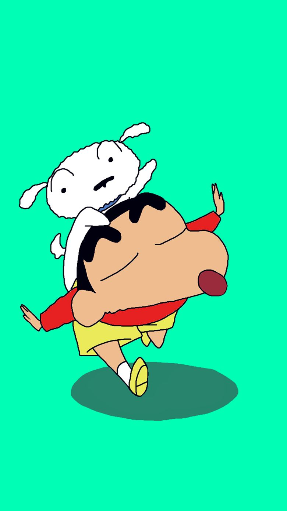

Cartoon we like
We like it
Which one do you like?
Which one is the best?
Crayon Shin-chan first appeared in 1990 in a Japanese weekly magazine called Weekly Manga Action, which is published by Futabasha. Due to the death of author Yoshito Usui, the manga in its original form ended on September 11, 2009. A new manga began in the summer of 2010 by members of Usui's team,[5] titled New Crayon Shin-chan (新クレヨンしんちゃん Shin Kureyon Shin-chan).
An anime adaptation of the series began airing on TV Asahi in 1992 and is still ongoing on several television networks, worldwide. The show has now been dubbed in 30 languages[6] which aired in 45 countries,[7] has over 970 episodes and 26 full-length films. More than 100 million copies of the manga have been sold worldwide.[7]